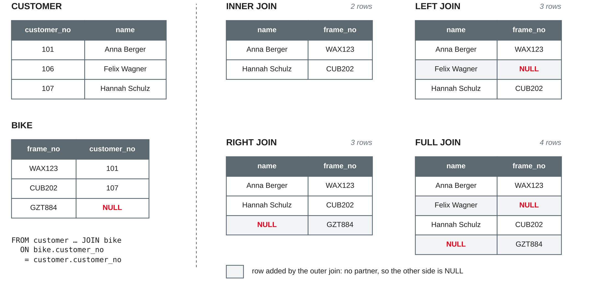

Data Management
Inner joins · left, right and full outer joins · self joins · join pitfalls
DHBW · Digital Business Management (Business IT) · Semester 2
INNER JOINLEFT, RIGHT and FULLSELECT … FROM one table WHERE … ORDER BY …employeeToday we put the pieces back together: a join combines rows of several tables in one query.
import sqlite3
con = sqlite3.connect("bikeshop.db")
con.execute("PRAGMA foreign_keys = ON")
for script in ["bikeshop-schema.sql", "bikeshop-data.sql",
"bikeshop-data-session09.sql"]:
with open(script, encoding="utf-8") as f:
con.executescript(f.read())Own example based on the bike shop case from sessions 3–8.
INNER JOIN
FROM clause| Question | Join path |
|---|---|
| Who owns which bike? | bike.customer_no = customer.customer_no |
| Which parts were used in job 511? | repair_line.part_no = spare_part.part_no |
| What is the mechanic's name? | mechanic.employee_no = employee.employee_no |
Based on Codd (1970) and Elmasri and Navathe (2016, Chapter 6).
SELECT b.frame_no, b.brand, c.name, c.city FROM bike AS b JOIN customer AS c ON b.customer_no = c.customer_no ORDER BY c.name;
| frame_no | brand | name | city |
|---|---|---|---|
| WAX123 | Cube | Anna Berger | Mannheim |
| RIE420 | Riese & Müller | Clara Neumann | Heidelberg |
| BRO860 | Brompton | Elif Demir | Weinheim |
| … | … | … | … |
JOIN … ON names the second table and the join condition; JOIN is short for INNER JOINb, c) keep queries short; b.frame_no says which table a column comes fromBased on Elmasri and Navathe (2016, Chapter 7) and SQLite (n.d.-a).
ON condition is TRUE — 11 rowsWHERE, SELECT, ORDER BY work on this combined table as in session 8SELECT count(*) FROM bike, customer; -- 180
SELECT count(*) FROM bike JOIN customer
ON bike.customer_no = customer.customer_no; -- 11This is the logical meaning of a join. The DBMS does not really build all 180 rows — it uses smarter methods, but the result is the same.
Based on SQLite (n.d.-a) and Elmasri and Navathe (2016, Chapter 6).
SELECT j.job_no, j.job_date, b.frame_no, c.name FROM repair_job AS j JOIN bike AS b ON j.frame_no = b.frame_no JOIN customer AS c ON b.customer_no = c.customer_no; -- 11 of 12 jobs
SELECT jm.job_no, e.name, m.qualification FROM job_mechanic AS jm JOIN mechanic AS m ON jm.employee_no = m.employee_no JOIN employee AS e ON m.employee_no = e.employee_no WHERE jm.job_no IN (502, 504, 511); -- 6 rows
JOIN adds one table and one condition: n tables need n − 1 join conditionsjob_mechanic)Based on Elmasri and Navathe (2016, Chapter 6) and SQLite (n.d.-a).
| Syntax | Meaning | Remark |
|---|---|---|
FROM bike b, customer c WHERE b.customer_no = c.customer_no | inner join (older style) | 11 rows; forgetting the WHERE gives 180 |
FROM bike JOIN customer USING (customer_no) | join on equal column names | 11 rows; customer_no appears once |
FROM bike NATURAL JOIN customer | USING on all common names | 11 rows — by luck |
FROM customer NATURAL JOIN spare_part | joins on name | 0 rows |
NATURAL JOIN depends on column names: adding a column can silently change the resultJOIN … ON with explicit conditionsBased on SQLite (n.d.-a) and Elmasri and Navathe (2016, Chapter 7).
Write one query per question. Predict the number of rows first.
LEFT, RIGHT and FULL

Own illustration based on SQLite (n.d.-a) and the course sample data.
SELECT c.customer_no, c.name, b.frame_no, b.brand FROM customer AS c LEFT JOIN bike AS b ON b.customer_no = c.customer_no ORDER BY c.customer_no;
| customer_no | name | frame_no | brand |
|---|---|---|---|
| 105 | Selin Kaya | CAN750 | Canyon |
| 106 | Felix Wagner | NULL | NULL |
| 107 | Hannah Schulz | CUB202 | Cube |
LEFT JOIN = LEFT OUTER JOIN; the word OUTER is optionalBased on SQLite (n.d.-a) and Elmasri and Navathe (2016, Chapter 7).
SELECT b.frame_no, b.brand, b.model FROM bike AS b LEFT JOIN repair_job AS j ON j.frame_no = b.frame_no WHERE j.job_no IS NULL; -- bikes that were never repaired
| Question | Result |
|---|---|
| Bikes never repaired | GZT884, TRK311, CUB203, GZT886 |
| Repair jobs without a mechanic | 512 |
| Mechanics without a repair job | 8 (Tim Krause) |
| Spare parts never used | P-112 (Mudguard set) |
LEFT JOIN + WHERE <partner's primary key> IS NULLBased on SQLite (n.d.-a) and Elmasri and Navathe (2016, Chapter 7).
SELECT c.customer_no, c.name, b.frame_no FROM customer AS c FULL JOIN bike AS b ON b.customer_no = c.customer_no;
| Join of customer (left) and bike (right) | Rows |
|---|---|
JOIN (inner) | 11 |
LEFT JOIN: + Felix Wagner without bike | 12 |
RIGHT JOIN: + 4 bikes in stock | 15 |
FULL JOIN: + both | 16 |
A RIGHT JOIN B gives the same rows as B LEFT JOIN A — most people write LEFT joins onlyRIGHT and FULL OUTER JOIN only since version 3.39.0 (2022); older versions report a syntax errorBased on SQLite (n.d.-a, 2022) and Elmasri and Navathe (2016, Chapter 7).
SELECT j.job_no, b.frame_no, b.customer_no, c.name FROM repair_job AS j JOIN bike AS b ON b.frame_no = j.frame_no LEFT JOIN customer AS c ON c.customer_no = b.customer_no WHERE j.job_no IN (506, 507);
| job_no | frame_no | customer_no | name |
|---|---|---|---|
| 506 | SCO640 | 108 → NULL | Paul Richter → NULL |
| 507 | KTM530 | NULL | NULL |
DELETE FROM customer WHERE customer_no = 108 (ON DELETE SET NULL), both rows look the sameBased on SQLite (n.d.-a, n.d.-b); own example.
A table joined with itself
SELECT e.name AS mechanic, m.qualification, s.name AS supervisor FROM mechanic AS m JOIN employee AS e ON e.employee_no = m.employee_no LEFT JOIN employee AS s ON s.employee_no = m.supervisor_no ORDER BY m.employee_no;
| mechanic | qualification | supervisor |
|---|---|---|
| Katrin Vogel | master | NULL |
| Deniz Arslan | journeyman | Katrin Vogel |
| Jan Hoffmann | apprentice | Katrin Vogel |
| Sophie Lindner | e-bike technician | Katrin Vogel |
| Tim Krause | apprentice | Deniz Arslan |
supervisor_no refers to the same tableLEFT JOIN keeps Katrin Vogel, who has no supervisor; an inner join gives 4 rowsBased on Elmasri and Navathe (2016, Chapter 7); own example.
SELECT a.job_no, a.employee_no AS mechanic_1, b.employee_no AS mechanic_2
FROM job_mechanic AS a
JOIN job_mechanic AS b ON a.job_no = b.job_no
AND a.employee_no < b.employee_no;| job_no | mechanic_1 | mechanic_2 |
|---|---|---|
| 502 | 1 | 3 |
| 504 | 1 | 4 |
| 511 | 1 | 2 |
<> gives every pair twice (6 rows); < keeps each pair once (3 rows)Own example based on Elmasri and Navathe (2016, Chapter 6).
Too many rows, too few rows, wrong rows
SELECT count(*) FROM bike, customer; -- 180
SELECT count(*) FROM bike JOIN customer; -- 180
SELECT count(*) FROM repair_job AS j
JOIN bike AS b ON j.job_no = b.customer_no; -- 0Based on SQLite (n.d.-a) and Elmasri and Navathe (2016, Chapter 6).
SELECT c.name FROM customer AS c JOIN bike AS b ON b.customer_no = c.customer_no JOIN repair_job AS j ON j.frame_no = b.frame_no; -- 11 rows: Anna Berger twice
SELECT DISTINCT c.name → 10 rowsAsk: what does one row of my result mean? One customer, one job, one repair line? Then check the row count.
Based on Elmasri and Navathe (2016, Chapter 6); own example.
-- all bikes, with their repair jobs from April 2027 if any
SELECT b.frame_no, j.job_no, j.job_date
FROM bike AS b
LEFT JOIN repair_job AS j ON j.frame_no = b.frame_no
WHERE j.job_date >= '2027-04-01'; -- 2 rows!
LEFT JOIN repair_job AS j ON j.frame_no = b.frame_no
AND j.job_date >= '2027-04-01'; -- 15 rowsWHERE, the condition is UNKNOWN for the NULL rows the outer join added — they are removed again: the LEFT JOIN acts like an inner joinBased on SQLite (n.d.-a) and Elmasri and Navathe (2016, Chapter 7).
NULL = NULL is UNKNOWNbike JOIN customerSELECT b.frame_no, j.job_no, j.description FROM bike AS b LEFT JOIN repair_job AS j ON j.frame_no = b.frame_no WHERE j.description IS NULL; -- 6 rows, not 4
WHERE j.job_no IS NULL → the 4 bikes without a jobBased on Elmasri and Navathe (2016, Chapter 7) and SQLite (n.d.-a).
SELECT customer_no, name, frame_no FROM bike JOIN customer ON bike.customer_no = customer.customer_no; -- Error: ambiguous column name: customer_no
b.customer_no or c.customer_noname works here only because bike has no name column — add a table with a name (e.g. spare_part) and the query breakse.name AS mechanic, s.name AS supervisorHabit: qualify every column in a multi-table query and give result columns clear names with AS.
Based on SQLite (n.d.-a) and Elmasri and Navathe (2016, Chapter 6).
LEFT JOIN — and filters on the optional table go into ONASOwn summary of the pitfalls on the previous slides.
Business questions across tables
Use the fresh database with all three scripts. Predict the number of rows first.
Join queries are part of milestone 3 (database and queries, after session 12).
INNER JOIN keeps only matching pairs; LEFT, RIGHT, FULL outer joins also keep unmatched rows and fill the other side with NULLLEFT JOIN + WHERE partner_key IS NULLGROUP BY, HAVINGPreparation: finish the hands-on questions and worksheet 9; bring your team's join queries.